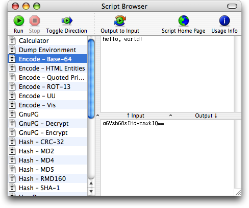

Script BrowserScript Browser
Script BrowserScript BrowserThe browser is where you can store and run all of your scripts with a few clicks. Instead of a source code editor, the browser contains a list of your favorite scripts.
There are three ways to add scripts to the script browser:
The script browser works almost like the script editor: enter some input and run the script to see the output. If Auto-Run is enabled, Pipe will run each script as you click on it in the browser. This allows you to quickly see the output of various scripts using the same input.
Script errors are not visible from the script browser: The errors drawer is only available in the Script Editor.
If you would like to quickly open a script in the editor, either:
You can display additional information about some scripts: